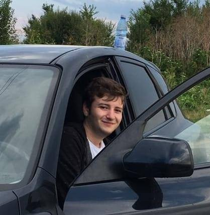
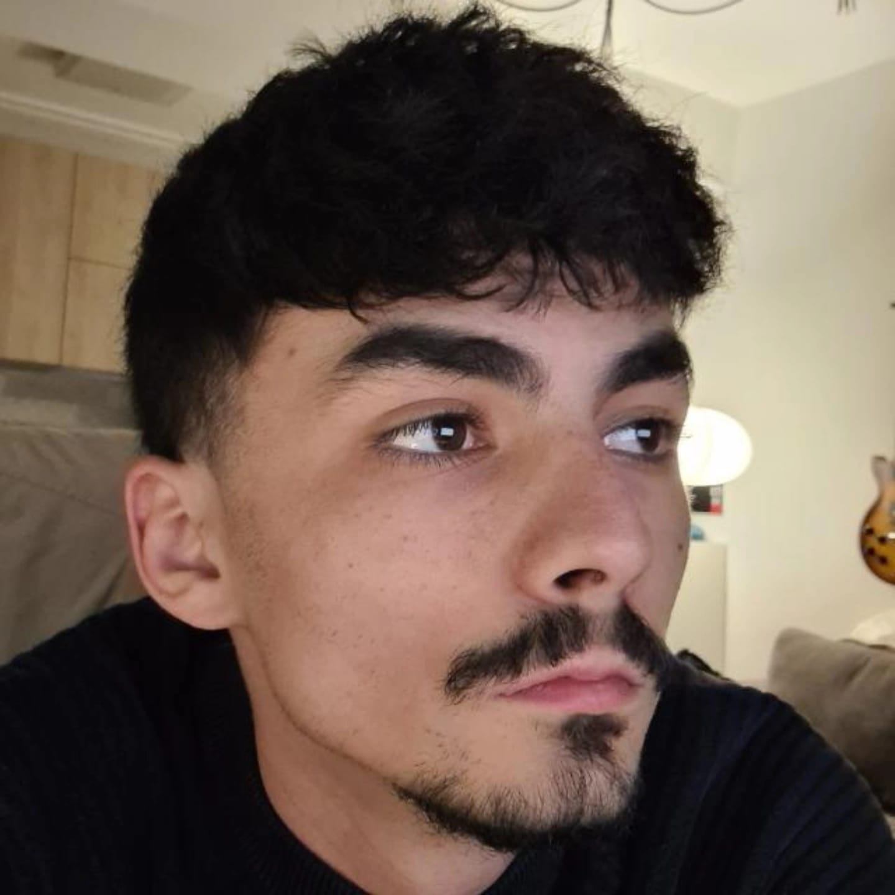
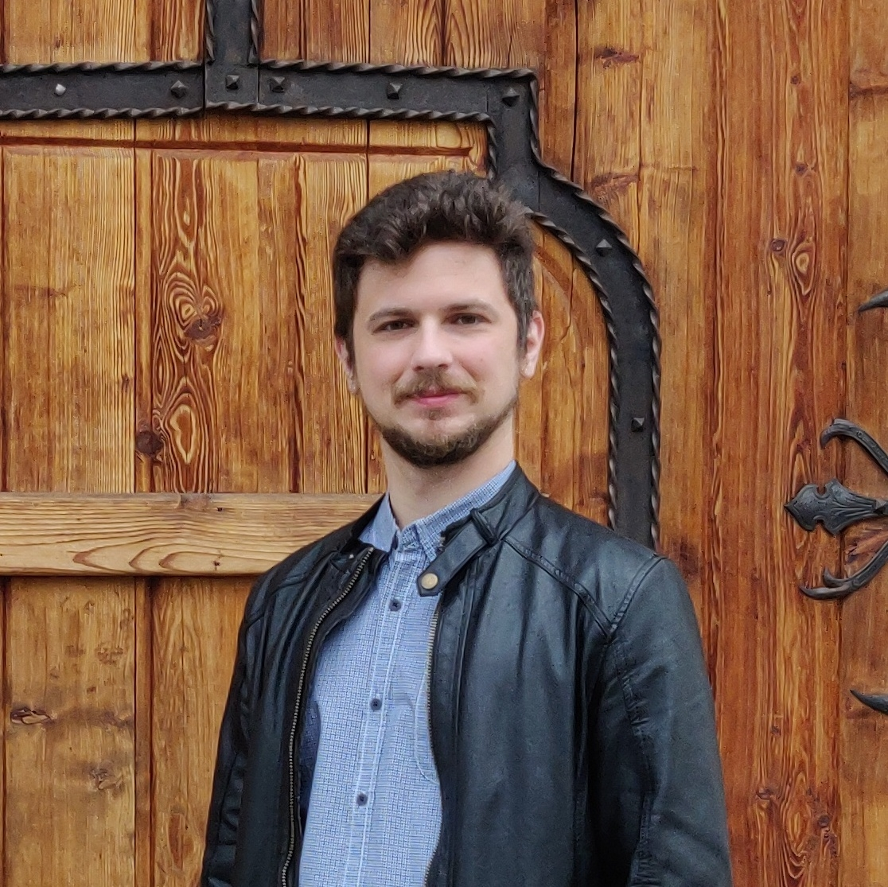
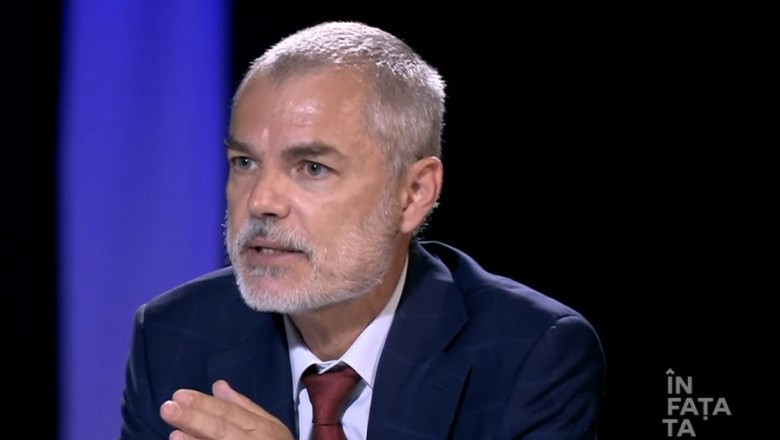

CeCitimAzi — Platformă de E-Learning Medical
Principii pedagogice bazate pe dovezi · Spaced repetition adaptiv · Conținut generat de AI și verificat de specialiști · Showroom de componente interactive
Medicina bazată pe dovezi a schimbat practica clinică, dar educația medicală a rămas în urmă. Cursurile PowerPoint, manualele enciclopedice și examenele bazate pe memorare domină în continuare formarea medicală. CeCitimAzi este o platformă de e-learning construită pe premisa că metoda prin care un medic rezident învață contează la fel de mult ca informația pe care o învață. Fiecare decizie de design pedagogic are la bază dovezi din științele cognitive ale învățării — retrieval practice, spaced repetition, elaborative interrogation, curiozitate epistemică — transformând lectura pasivă în învățare activă, măsurabilă și adaptivă.
De ce educația medicală are nevoie de o altă abordare?
În 1972, Archie Cochrane publica Effectiveness and Efficiency, în care arăta că majoritatea intervențiilor medicale practicate la acea vreme nu aveau suport empiric adecvat. Practica clinică era ghidată preponderent de raționament fiziopatologic și experiență personală, nu de studii controlate. În 1991, Gordon Guyatt introduce formal termenul „evidence-based medicine", propunând un cadru metodologic sistematic pentru evaluarea intervențiilor terapeutice.
Studii care au evidențiat necesitatea EBM
Mai multe studii clinice au produs rezultate care contraziceau predicțiile bazate pe raționamentul mecanicist, ilustrând limitele acestui tip de abordare.
Mai jos aveți exemplificat componentul Pearl (Clinical Pearl). Rolul lui este de a evidenția un concept-cheie sau o lecție clinică esențială pe care studentul trebuie să o rețină. Pearl-urile sunt proiectate ca elemente de ancorare mnezică — informație condensată, cu impact clinic direct.
Encainida și flecainida suprimau eficient aritmiile ventriculare post-infarct miocardic. Ipoteza mecanicistă: reducerea aritmiilor ar trebui să reducă mortalitatea subită. Rezultatele au arătat însă o mortalitate semnificativ mai mare în grupul tratat față de placebo, iar studiul a fost oprit prematur. Concluzia: îmbunătățirea unui surrogate endpoint nu garantează un beneficiu pe outcome-ul clinic primar.
Torcetrapibul (inhibitor CETP) creștea HDL-colesterolul cu aproximativ 70%. Ipoteza: creșterea farmacologică a HDL-ului ar replica efectul protector cardiovascular observat epidemiologic la persoanele cu HDL nativ crescut. Studiul ILLUMINATE a fost oprit prematur din cauza mortalității cardiovasculare semnificativ crescute în grupul tratat. Concluzia este consistentă cu cea din CAST: modificarea farmacologică a unui biomarker nu reproduce neapărat mecanismul biologic prin care acel biomarker conferă protecție în mod natural.
Mai jos aveți exemplificat componentul Warning. Rolul lui este de a semnala o capcană clinică, o eroare frecventă sau o limitare importantă care poate avea consecințe semnificative dacă este ignorată. Baza științifică: feedback-ul corectiv imediat (Hattie & Timperley, 2007) — effect size 0.73 pe retenție.
În practica clinică, orice intervenție terapeutică trebuie validată prin studii controlate înainte de a fi adoptată pe scară largă. În educația medicală, această exigență lipsește: metodele de predare și evaluare sunt adoptate prin tradiție instituțională, nu prin testare sistematică. Experiența didactică a profesorilor este valoroasă, dar insuficientă în sine — la fel cum experiența clinică a unui medic, oricât de vastă, nu înlocuiește dovezile din studii. CeCitimAzi propune aplicarea aceluiași cadru metodologic: fiecare decizie de design pedagogic este fundamentată pe dovezi din științele cognitive ale învățării, nu pe intuiție sau pe convenție.
Mai jos aveți exemplificat componentul Quiz (grilă MCQ cu 5 opțiuni). Rolul lui este de a aplica retrieval practice imediat după expunerea la informație. Fiecare opțiune include feedback elaborat care explică nu doar de ce răspunsul corect este corect, ci și de ce fiecare distractor este greșit. Baza științifică: Roediger & Karpicke (2006) — testarea activă produce retenție superioară relecturii; Hattie & Timperley (2007) — feedback-ul elaborat per variantă are effect size 0.73.
B) GREȘIT — Meta-analizele pot evalua orice intervenție pentru care există studii. Vechimea unui medicament nu limitează posibilitatea de evaluare.
C) GREȘIT — Afirmație prea categorică. Digoxinul rămâne util în anumite situații. EBM nu înseamnă respingerea tradițiilor, ci validarea lor riguroasă.
D) GREȘIT — Digoxinul nu a fost retras; este în continuare utilizat la doze mici, cu indicații precise. Principiul precauției nu implică retragerea automată.
Platforma CeCitimAzi — Ce oferim
CeCitimAzi este o platformă de e-learning medical destinată rezidenților de Medicină de Familie din România. Modulul curent — Pre-Stagiu Boli Infecțioase — cuprinde 29 de capitole planificate, din care 6 sunt disponibile, cu peste 100 de utilizatori activi.
Structura unui capitol
Fiecare capitol urmează o structură pedagogică standardizată: ancorare în relevanța clinică a subiectului, text didactic cu mecanismele fiziopatologice relevante, grile MCQ intercalate imediat după paragraful corespunzător (retrieval practice), elemente vizuale (algoritmi de decizie, imagistică, tabele comparative) și cazuri clinice interactive progresive. Un Knowledge Sidebar persistent acompaniază fiecare secțiune cu rezumate, mnemonice și note de fiziopatologie.
Mai jos aveți exemplificat componentul Highlight. Rolul lui este de a izola vizual o informație-cheie sau o regulă clinică esențială care trebuie reținută. Spre deosebire de Pearl (care prezintă un raționament), Highlight-ul sintetizează fapte concrete, rapid accesibile la o recitire ulterioară.
Frontend: HTML self-contained (fără CDN extern, doar Google Fonts) generat de `cecitimazi_build.py` (~1900 linii Python). Conținut: Markdown cu directive `:::component` — un limbaj de markup propriu care permite 21 tipuri de componente interactive. Verificare medicală: 4 servere MCP (Open Medicine, Healthcare MCP, Medical MCP, RAG ChromaDB). Spaced repetition: FSRS (Free Spaced Repetition Scheduler) — algoritmul implicit Anki din v23.10.
Mai jos aveți exemplificat componentul Comparison (comparație lado-a-lado). Rolul lui este de a facilita discriminarea activă între două entități frecvent confundate sau care necesită diferențiere explicită. Fiecare coloană reprezintă o entitate distinctă, iar rândurile evidențiază diferențele punct cu punct. Baza științifică: procesarea comparativă facilitează codificarea diferențelor distinctive (Gentner & Markman, 1997).
CeCitimAzi
- Predare integrată + retrieval practice
- Conținut pre-construit, verificat medical
- Cazuri clinice interactive progresive
- FSRS adaptiv per lecție (15 min)
- Verificare MCP la generare
- Engagement-first design
Anki
- Doar flashcard-uri, fără predare
- Conținut creat manual de utilizator
- Nu suportă cazuri clinice
- FSRS adaptiv per card (secunde)
- Fără verificare automată
- Interfață minimalistă
Mai jos aveți exemplificat componentul Table (tabel structurat). Rolul lui este de a organiza informația în format tabelar cu coloane definite, facilitând scanarea rapidă și compararea atributelor. Spre deosebire de Comparison (care compară două entități pe orizontală), Table-ul prezintă itemi independenți pe verticală, fiecare rând fiind o unitate autonomă.
Componente interactive disponibile în fiecare capitol
| Componentă | Rol pedagogic | Baza de dovezi |
|---|---|---|
| Card „De ce contează" | Ancorare în relevanță clinică | Psihologie motivațională (Eccles, 1983) |
| Grile MCQ intercalate | Retrieval practice imediat | Roediger & Karpicke, 2006 — effect size 0.50 |
| Knowledge Sidebar | Elaborative interrogation + curiozitate | Woloshyn 1992; Gruber 2014 |
| Flashcard-uri | Retrieval practice cu feedback elaborat | Dunlosky et al., 2013 |
| Cazuri clinice | Situated learning + raționament clinic | Lave & Wenger, 1991 |
| Matching game | Discriminare activă între entități | Problem-based learning |
| Ordonare severitate | Raționament clinic aplicat | Desirable difficulties (Bjork, 2011) |
| Algoritm clinic interactiv | Gândire decizională structurată | Clinical decision trees |
| Spaced repetition FSRS | Retenție pe termen lung | Ebbinghaus 1885; Cepeda 2006 |
| Feedback elaborat per variantă | Corectare misconcepții | Hattie & Timperley, 2007 — effect size 0.73 |
Principii pedagogice — Dovezile din spatele designului
Designul pedagogic al platformei se bazează pe tehnici validate experimental în științele cognitive ale învățării. Mai jos sunt prezentate principalele mecanisme utilizate și dovezile care le susțin.
Retrieval practice
Roediger & Karpicke (2006) au arătat că testarea activă (retrieval practice) produce retenție pe termen lung semnificativ superioară relecturii repetate, chiar și atunci când timpul total de studiu este egal între grupuri. Mecanismul propus: fiecare act de retrieval consolidează traseul de acces la informație din memoria pe termen lung. În CeCitimAzi, grilele MCQ sunt intercalate imediat după paragrafele relevante, nu la finalul capitolului, pentru a maximiza efectul de testing.
Curiozitatea epistemică
Gruber, Gelman & Ranganath (2014, Neuron) au demonstrat că starea de curiozitate activează circuitul dopaminergic mezolimbic (VTA → nucleus accumbens) și hipocampul. Efectul observat: îmbunătățirea retenției nu doar a informației care a generat curiozitatea, ci și a informației incidentale prezentate în aceeași fereastră temporală. Componentele „Știați că?" din sidebar sunt concepute pentru a induce această stare înainte de secțiunile cu densitate informațională mare.
Desirable difficulties și engagement
Bjork & Bjork (2011) au descris fenomenul desirable difficulties: condițiile de învățare percepute ca mai dificile produc adesea retenție superioară pe termen lung. Există însă o constrângere practică — un material pe care utilizatorul îl abandonează nu produce niciun efect de învățare. Designul platformei echilibrează dificultatea cognitivă cu elementele de engagement necesare menținerii atenției pe durata unei lecții de 15 minute.
B) GREȘIT — Relectura repetată creează o „iluzie de fluență" — materialul pare familiar, dar nu este accesibil la recall activ. Familiaritatea nu este echivalentă cu învățarea.
C) GREȘIT — Parțial corect (Grupul A poate părea mai bun imediat), dar diferența devine semnificativă la testarea întârziată, nu nesemnificativă. Effect size ~0.50 la o săptămână.
D) GREȘIT — Retrieval practice funcționează indiferent de domeniu. Farmacologia beneficiază masiv de testare activă cu feedback elaborat.
Algoritmul FSRS — Spaced Repetition Adaptiv
SM-2 (SuperMemo 2, Woźniak, anii '80) a fost standardul de aur al spaced repetition timp de decenii. Calculează intervalul următor bazat doar pe ultimul răspuns, fără memorie pe termen lung despre istoricul itemului.
FSRS (Free Spaced Repetition Scheduler, Jarvis Han, 2022-2023) folosește un model psihologic bazat pe trei variabile: Stabilitatea (câte zile pot trece înainte ca probabilitatea de recall să scadă la 90%), Dificultatea (cât de greu este materialul specific pentru acest utilizator, pe o scară de 1-10) și Retrievability (probabilitatea actuală că utilizatorul își amintește).
Mai jos aveți exemplificat componentul Calculator clinic. Rolul lui este de a permite calcularea interactivă a scorurilor clinice validate (Centor, qSOFA, CURB-65, Wells etc.) direct în lecție. Studentul introduce parametrii pacientului și primește scorul cu interpretarea clinică. Baza științifică: învățarea activă prin manipularea variabilelor consolidează înțelegerea pragurilor de decizie clinică mai eficient decât memorarea tabelelor statice.
Calculator Centor / McIsaac — Demo
Mai jos aveți exemplificat componentul Collapsible (secțiune expandabilă). Rolul lui este de a ascunde informație suplimentară de tip referință sau detaliu tehnic care ar aglomera fluxul principal de lectură, dar rămâne accesibilă la cerere. Reduce încărcătura cognitivă fără a sacrifica completitudinea (Sweller, 1988 — Cognitive Load Theory).
La prima lectură (inițializare): D₀ = 7 - 3 × (rating - 1). Rating 1 (Again) → D = 7 (dificil). Rating 4 (Easy) → D = 4 (ușor). Stabilitatea inițială: Again → S = 0.40 zile; Hard → S = 1.18 zile; Good → S = 3.17 zile; Easy → S = 8.93 zile.
La repetiții ulterioare: Retrievability la momentul review-ului: R = (1 + t / (9 × S))^(-1), unde t = zile de la ultima repetiție. Stabilitate nouă după răspuns corect: S' = S × e^(w₁₇ × (11-D) × S^(-w₁₈) × (e^(w₁₉×(1-R)) - 1) + 1). Interval următor: I = S' × ln(0.9) / ln(R_target), unde R_target = 0.90.
Parametrii w sunt antrenați pe milioane de carduri Anki și disponibili în paper-ul original (Han et al., 2023).
Echipa
Proiectul CeCitimAzi este construit de o echipă interdisciplinară care combină practica clinică, dezvoltarea software, neuroștiințele cognitive și cercetarea academică.
Fondatorul
Mai jos aveți exemplificat componentul Image (imagine cu legendă expandabilă). Rolul lui este de a integra imagini clinice, imagistică sau fotografii cu descrieri detaliate vizibile la click. Descrierea se adaptează tipului de imagine: pentru fotografii clinice se descrie ce se vede; pentru diagrame se explică utilitatea clinică. Fiecare imagine include sursa originală, vizibilă în lightbox.

- Radu-Dimitrie Tunareanu este medic rezident de Medicină de Familie și fondatorul platformei CeCitimAzi. Absolvent al UMF Carol Davila (2017-2023), bilingv româno-englez (Cambridge CAE — C2), cu studii suplimentare în Psihologie la Universitatea Titu Maiorescu (2025-2028).
- Radu-Dimitrie Tunareanu este medic rezident de Medicină de Familie și fondatorul platformei CeCitimAzi. Absolvent al UMF Carol Davila (2017-2023), bilingv româno-englez (Cambridge CAE — C2), cu studii suplimentare în Psihologie la Universitatea Titu Maiorescu (2025-2028).
- A construit și lansat platforma CeCitimAzi de la zero, creând studii de caz clinice, bănci de grile MCQ și rezumate structurate din manuale medicale, toate generate cu asistență AI și verificate riguros. A elaborat sute de prompturi medicale pe Claude și Gemini, dezvoltând expertiză în identificarea erorilor de raționament clinic ale modelelor AI.
Co-fondatorul

- Ștefan Isac este software developer cu peste 4 ani de experiență în arhitectura aplicațiilor web și soluțiilor Microsoft Power Platform. Studii în curs la Facultatea de Informatică (Universitatea din București) și Facultatea de Finanțe (ASE).
- Ștefan Isac este software developer cu peste 4 ani de experiență în arhitectura aplicațiilor web și soluțiilor Microsoft Power Platform. Studii în curs la Facultatea de Informatică (Universitatea din București) și Facultatea de Finanțe (ASE).
- Experiență solidă în dezvoltare PHP, WordPress, WooCommerce și SQL Server, cu focus pe performanță și scalabilitate. Aduce expertiza tehnică necesară pentru transformarea CeCitimAzi dintr-un proiect de conținut într-o platformă scalabilă cu sistem de abonamente și dashboard personalizat.
Specialist în Design Experimental și Coordonator Academic
Mai jos aveți exemplificat componentul Image Pair (două imagini afișate lado-a-lado). Rolul lui este de a permite compararea vizuală directă între două imagini — în context clinic, folosit frecvent pentru comparații „înainte/după", diagnostic diferențial vizual sau variante anatomice. Fiecare imagine poate avea descriere și sursă independentă.

- Andrei Cătălin Ciuparu — MSc Cognitive Neuroscience (Research) de la Radboud University / Donders Institute (Nijmegen, Olanda). Research Assistant la Transylvanian Institute of Neuroscience (TINS) din 2018, cu publicații în European Journal of Neuroscience, Neurocomputing și Cerebral Cortex....
- Andrei Cătălin Ciuparu — MSc Cognitive Neuroscience (Research) de la Radboud University / Donders Institute (Nijmegen, Olanda). Research Assistant la Transylvanian Institute of Neuroscience (TINS) din 2018, cu publicații în European Journal of Neuroscience, Neurocomputing și Cerebral Cortex. Expertiza sa în EEG, eye tracking, machine learning și design experimental este esențială pentru construcția și validarea protocolului de studiu care va evalua eficacitatea platformei.

- Prof. Dr. Mihai Craiu — Conferențiar Universitar la UMF Carol Davila, Șef Secție Pediatrie V – Pneumologie Pediatrică la IOMC Alfred Rusescu. Peste 20 de ani de experiență clinică și didactică, instructor PALS (Pediatric Advanced Life Support), membru al Societății Române de Pediatrie și al...
- Prof. Dr. Mihai Craiu — Conferențiar Universitar la UMF Carol Davila, Șef Secție Pediatrie V – Pneumologie Pediatrică la IOMC Alfred Rusescu. Peste 20 de ani de experiență clinică și didactică, instructor PALS (Pediatric Advanced Life Support), membru al Societății Române de Pediatrie și al European Respiratory Society. Va coordona studiul de validare al platformei pe studenții din rotația de Pediatrie.
Protocolul de studiu — Validarea platformei
CeCitimAzi nu este încă validată empiric pe populația-țintă. Studiul de la Catedra de Pediatrie a Prof. Dr. Mihai Craiu este primul pas.
Design-ul studiului
Toți studenții din rotația de Pediatrie (an 5) primesc acces liber la platformă. Post-hoc, se stratifică după uzul real: engagement ridicat, mediu și scăzut. Se compară scorurile la examenul final, controlând statistic pentru performanța academică anterioară (media anilor 1-4), prezența la cursuri și seria de rotație.
Mai jos aveți un al doilea exemplu de componentul Highlight, aplicat aici la metodologia statistică a studiului.
Problema centrală: studentul motivat folosește mai mult platforma ȘI ia note mai bune. Nu poți ști direct dacă platforma a cauzat performanța. Soluția: construiești un model predictiv al scorului așteptat pe baza notelor anterioare și prezenței. Calculezi pentru fiecare student residualul (scor actual − scor prezis). Dacă studenții care au folosit platforma au reziduali pozitivi sistematic — au performat mai bine decât preziceau caracteristicile lor anterioare — ai argumentul cel mai puternic posibil.
B) GREȘIT — RCT cu randomizare individuală nu este fezabil: (1) contaminarea între studenți — comunică între ei, împart materiale; (2) etic discutabil — privarea deliberată a unui grup de o resursă educațională.
C) GREȘIT — Case-control introduce selection bias maxim. Studenții cu note mari probabil folosesc toate resursele disponibile — nu poți separa efectul platformei de motivația generală.
D) GREȘIT — Comparația istorică nu controlează pentru diferențele între cohorte (dificultatea examenului, calitatea predării, caracteristicile studenților). Confounding masiv temporal.
Mai jos aveți exemplificat componentul Timeline. Rolul lui este de a prezenta o secvență cronologică de evenimente sau milestones. În context clinic, este utilizat pentru evoluția naturală a bolilor, scheme terapeutice secvențiale sau perioade de incubație. Aici îl folosim pentru roadmap-ul proiectului.
Martie 2026: Prima versiune de test a CeCitimAzi — lansare cu modulul de Boli Infecțioase, pipeline de generare conținut cu verificare MCP, 100+ utilizatori organici | Prima versiune publică
Aprilie 2026: Finalizare modul Boli Infecțioase — 29 capitole complete cu grile, cazuri clinice, algoritmi interactivi, imagini și Knowledge Sidebar | Conținut complet BI
Mai–Septembrie 2026: Pregătire studiu — design experimental (Andrei Ciuparu), implementare FSRS cu dashboard personalizat (Ștefan Isac), generare capitole de Pediatrie pentru studiu, aviz Comisie de Etică UMF | De la conținut la platformă validabilă
Octombrie 2026: Etapa I — prima serie de 50 studenți an 5 în rotația de Pediatrie (Prof. Craiu), acces liber la platformă, colectare date de utilizare + scoruri examen | Prima validare empirică
Ianuarie 2027: Etapa II — a doua serie de studenți, acumulare date suplimentare, iterare pe baza feedback-ului din prima etapă | Consolidare statistică
Aprilie 2027: Etapa III — a treia serie de studenți, publicare rezultate, analiză finală cu regresie OLS și analiza valorii adăugate | Validare completă
Componente interactive — Demo live
Această secțiune demonstrează componentele interactive disponibile în platformă, folosind exemple de Pediatrie — disciplina pe care o vom valida în primul studiu.
Matching game
Mai jos aveți exemplificat componentul Matching Game. Rolul lui este de a solicita discriminarea activă între entități clinice frecvent confundate, prin asocierea fiecărei entități cu setul său de caracteristici distinctive. Studentul trebuie să conecteze fiecare boală cu trăsăturile sale patognomonice — un exercițiu de retrieval practice aplicat la diagnostic diferențial. Baza științifică: interleaving-ul și discriminarea activă (Kornell & Bjork, 2008) îmbunătățesc capacitatea de a distinge între categorii similare.
Severity sort
Mai jos aveți exemplificat componentul Severity Sort (ordonare după severitate). Rolul lui este de a testa raționamentul clinic prin ordonarea unor entități pe un gradient de severitate. Spre deosebire de memorarea unei clasificări, ordonarea cere studentului să evalueze activ diferențele relative între stadii — un proces cognitiv mai profund. Baza științifică: desirable difficulties (Bjork & Bjork, 2011) — sarcina de ordonare este mai dificilă decât recunoașterea, dar produce retenție superioară.
Flashcard-uri
Mai jos aveți exemplificat componentul Flashcard. Rolul lui este de a testa retrieval practice prin întrebări deschise cu răspunsuri pe verso. Spre deosebire de grilele MCQ (unde opțiunile oferă indicii), flashcard-ul solicită generarea liberă a răspunsului — un nivel de dificultate mai mare care produce retenție superioară (Dunlosky et al., 2013). Fiecare capitol conține minimum 4 flashcard-uri (număr par).
0-10 kg: 100 mL/kg/zi. 10-20 kg: 1000 mL + 50 mL/kg pentru fiecare kg peste 10. >20 kg: 1500 mL + 20 mL/kg pentru fiecare kg peste 20. Exemplu: copil de 25 kg = 1000 + 500 + 100 = 1600 mL/zi (~67 mL/h).
Reflexul Moro (abducție + extensie brațe, apoi adducție „în îmbrățișare") dispare la 4-6 luni. Persistența după 6 luni sugerează leziune neurologică centrală (paralizie cerebrală). Absența unilaterală la nou-născut sugerează paralizie de plex brahial (leziune Erb-Duchenne) sau fractură de claviculă.
Simple: durată <15 minute, generalizate, un singur episod în 24h, fără deficit post-ictal. Vârf la 12-18 luni. Complexe: durată >15 minute SAU focale SAU multiple în 24h SAU cu deficit post-ictal. Cele complexe necesită investigații suplimentare (EEG, eventual neuroimagistică). Ambele apar la copii 6 luni – 5 ani cu febră >38°C.
Sugarul plânge mai tare când este luat în brațe (mișcarea agravează durerea). Este echivalentul semnelor meningeale la sugar (care nu poate exprima cefalee sau fotofobie). Combinația fontanelă bombată + iritabilitate paradoxală + febră la sugar = suspiciune de meningită până la proba contrarie.
Quiz grupat
Mai jos aveți exemplificat componentul Quiz Grupat. Rolul lui este de a testa evaluarea simultană a mai multor afirmații, nu doar selecția unui singur răspuns corect. Studentul trebuie să analizeze fiecare afirmație individual și apoi să identifice combinația corectă — un exercițiu care testează raționamentul analitic, nu recunoașterea de pattern-uri.
2. Vaccinul ROR (rujeolă-oreion-rubeolă) se administrează prima doză la 6 luni
3. BCG se administrează în maternitate (ziua 2-7 de viață)
4. Vaccinul antigripal este recomandat tuturor copiilor începând de la vârsta de 6 luni
Algoritm clinic interactiv
Mai jos aveți exemplificat componentul Algoritm Clinic (flowchart interactiv de decizie). Rolul lui este de a structura vizual un protocol de evaluare sau triaj, cu noduri colorate pe tip (start, decizie, acțiune, final, alertă) și conectori SVG. La click pe fiecare nod, se deschide un Knowledge Sidebar cu explicații detaliate. Baza științifică: reprezentarea vizuală a algoritmilor de decizie facilitează gândirea procedurală și reduce erorile de omisiune în practica clinică (clinical decision trees).
Evaluare etiologică a hepatitei acute
Bazat pe ghidurile EASL, APASL și Am Fam Physician (PMID 30811163, 33967551)
Mai jos aveți exemplificat componentul Tags pe etiologia pneumoniilor comunitare, în ordinea frecvenței. Rolul lui este de a organiza agenții etiologici infecțioși dintr-un capitol folosind un cod de culori standardizat: albastru pentru virusuri, coral pentru bacterii, violet pentru fungi. Această codificare vizuală permite identificarea rapidă a tipului de agent și a frecvenței relative.
Viziunea — Ce urmează
CeCitimAzi se află în faza de validare. Cele 29 de capitole de Boli Infecțioase sunt construite și livrate gratuit, iar studiul de la Catedra de Pediatrie va oferi primele date despre eficacitatea platformei.
Dacă studiul confirmă că platforma aduce valoare măsurabilă independent de motivația intrinsecă a studentului, următorul pas este implementarea completă a dashboard-ului FSRS cu calendar personalizat de repetiții, urmată de extinderea la alte discipline (Pneumologie, Cardiologie, Nefrologie) și introducerea unui model de abonament pentru acces la conținut premium.
Mai jos aveți un al doilea exemplu de componentul Warning, aplicat aici pentru a semnala transparent o limitare metodologică a proiectului.
CeCitimAzi este construită pe principii pedagogice solide, dar eficacitatea sa pe populația-țintă nu a fost demonstrată. Studiul de la Catedra de Pediatrie este primul pas. Orice afirmație despre superioritatea platformei față de metodele tradiționale rămâne o ipoteză de testat, nu o concluzie. Această onestitate intelectuală este, paradoxal, cel mai bun argument pentru seriozitatea proiectului.
Mai jos aveți exemplificat componentul Case (caz clinic interactiv progresiv). Rolul lui este de a simula raționamentul clinic secvențial: studentul primește informația în etape (prezentare → examen clinic → investigații → evoluție), ia decizii la fiecare etapă și primește feedback elaborat. Acest format reproduce procesul decizional real din practica clinică, aplicând principiile de situated learning (Lave & Wenger, 1991) și problem-based learning. Fiecare capitol include minimum un caz clinic cu 3-9 etape.
Bronșiolita lui Andrei — Urgența din garda de noapte
Ești medic rezident de Medicină de Familie în gardă la urgența pediatrică. Este decembrie, sezon de infecții respiratorii. Mama aduce un sugar de 4 luni, Andrei, care „respiră greu" de ieri seară. A avut rinoree apoasă de 2 zile, apoi a început să tușească și să refuze sânul. Nu are antecedente patologice, născut la termen, vaccinuri la zi.
Examinezi sugarul: FR 58/min, FC 152/min, SaO₂ 91% în aer ambiant, T 37,8°C. Tiraj subcostal vizibil, wheezing expirator audibil la distanță, rinoree abundentă, tuse uscată. Se alimentează cu dificultate (suge 2-3 minute, apoi se oprește epuizat). Fontanela normotensivă, nu prezintă iritabilitate paradoxală.
C) GREȘIT — Pneumonia bacteriană la sugar are de obicei febră mai înaltă, raluri crepitante focale și sindrom de condensare. Wheezing-ul expirator difuz este mai sugestiv pentru bronșiolită.
D) GREȘIT — Diagnosticul de astm nu se pune sub vârsta de 2 ani (imposibil de confirmat spirometric). Salbutamolul nu a demonstrat beneficiu în bronșiolita la sugar în meta-analizele recente.
E) GREȘIT — Crupul se manifestă prin stridor INSPIRATOR și tuse lătrătoare, nu wheezing expirator. Obstrucția este supraglotică/subglotică, nu bronșică.
Aplici oxigen pe canulă nazală (2L/min), SaO₂ crește la 95%. Aspiri secreții nazale cu bulb syringe. Sugarul se liniștește și reîncepe să sugă, dar se oprește după 5 minute epuizat. Mama întreabă dacă poate merge acasă.
C) GREȘIT — Salbutamolul NU are indicație în bronșiolita la sugar (meta-analizele nu arată beneficiu). Antibioticele sunt inutile în infecția virală necomplicată.
D) GREȘIT — Sugar de 4 luni cu SaO₂ 91% în aer ambiant și alimentație compromisă necesită internare. Externarea expune la risc de decompensare acasă (apnee, deshidratare).
E) GREȘIT — Pragul de SaO₂ pentru internare este <92%, nu <85%. La 85% fără oxigen suplimentar, vorbim deja de insuficiență respiratorie severă care necesită ATI.
Diagnostic final: Bronșiolită acută moderată-severă, probabil VRS, la sugar de 4 luni.
Lecții cheie: - Bronșiolita este cea mai frecventă cauză de internare la sugari sub 1 an în sezonul rece - Tratamentul este SUPORTIV: oxigen, aspirare nazală, hidratare — NU salbutamol, NU antibiotice, NU corticosteroizi - Criterii de internare: SaO₂ <92%, alimentație compromisă, vârsta <6 luni, apnee - Vârful VRS = noiembrie-martie, cu maximul în decembrie-ianuarie